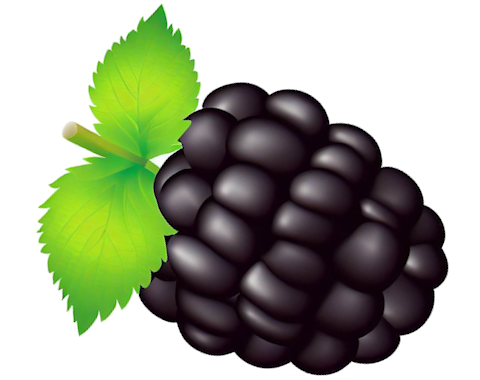
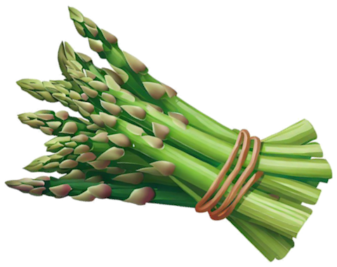

Farmers Al Minnack and Mark Itt want to plant four types of crops. They’ve already decided where some ASPARAGUS, BLACKBERRIES, SUNFLOWERS, and WATERMELONS, will be planted. Help them finish the plans such that no two regions sharing a boundary have the same crop. Two regions which meet only diagonally at a point may have the same crop. Use the number of each type of crop as an ordering and an index into that crop to get your answer.
2×

3×

3×
3×


Answer: